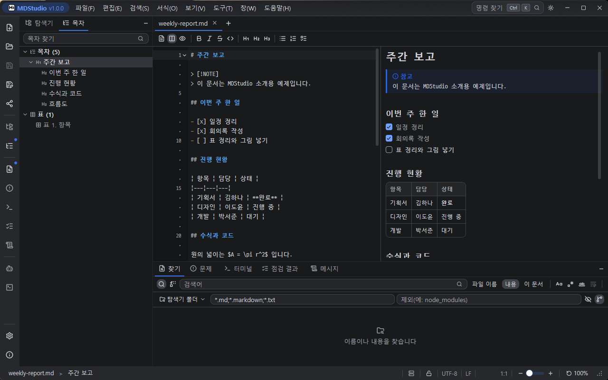

목차
목차 도구 창은 문서의 제목·그림·표·연결된 문서를 목록으로 보여 줍니다. 항목을 클릭해 그 줄로 가고, 제목을 끌어 절 순서를 바꾸며, 찾기 칸으로 거릅니다.
목차 열기
- 보기 > 도구 창 > 목차(F8)를 클릭합니다.
- 목차가 왼쪽 도구 창에서 탐색기와 나란히 있는 탭으로 열립니다.

목차에 보이는 것
목차는 묶음 네 개로 나뉘고, 항목이 없는 묶음은 보이지 않습니다.
| 묶음 | 들어가는 것 | 이름 |
|---|---|---|
| 목차 | #으로 시작하는 제목 |
제목 글 |
| 그림 | 와 <img> 태그 |
번호와 대체 텍스트, 없으면 파일 이름 |
| 표 | 마크다운 표 | 번호와 첫 머리글 칸 |
| 연결된 문서 | 문서 속성(프런트매터)의 links: |
적은 이름 |
항목으로 이동하기
- 제목, 그림, 표 항목을 클릭합니다.
- 커서가 그 줄로 가고, 초점은 편집기로 돌아갑니다. 표는 표의 첫 줄로 갑니다.
접기와 펼치기
- 제목 앞의 ▸(접힘)나 ▾(펼침)를 클릭합니다. 묶음 머리 줄도 같습니다.
- 접은 상태는 문서마다 기억해 탭을 옮기거나 다시 열어도 그대로입니다.
- 접은 제목 안으로 커서를 옮겨도 펼치지 않습니다. 다른 곳에 갔다가 돌아오면 펼칩니다.
- 항목의 오른쪽 클릭 메뉴에서 「모두 접기」(최상위만 남김)나 「모두 펼치기」를 선택합니다.
키보드로 목록 쓰기
목록 맨 아래 빈 자리를 클릭하면 목록에 초점이 갑니다.
| 키 | 동작 |
|---|---|
| ↑ / ↓ | 한 줄 위·아래 |
| ← | 펼친 제목은 접고, 아니면 부모 제목으로 갑니다 |
| → | 접힌 제목은 펼치고, 펼쳐져 있으면 첫 하위 제목으로 갑니다 |
| Enter | 그 줄로 가고 초점은 편집기로 |
| Space | 초점을 목록에 둔 채 그 줄을 봅니다 |
제목 끌어 옮기기
- 제목을 끌어 다른 제목 위에 놓습니다. 그 절(하위 절 포함)이 놓은 제목 앞으로 옮겨집니다.
- 제목 묶음의 끝(다음 묶음 머리 줄 위)에 놓으면 문서 맨 끝으로 옮겨집니다.
참고: 그림과 표는 끌 수 없습니다. 제목을 자기 절 안으로는 옮길 수 없습니다.
목차가 글보다 늦었으면 아무것도 바꾸지 않고 「목차가 글보다 늦어 옮기지 않았습니다. 다시 해 보세요.」 알림이 나옵니다.
찾기로 거르기
- 목차 맨 위의 「목차 찾기」 칸에 찾을 말을 입력합니다.
- 띄어쓰기로 나눈 단어가 모두 들어 있는 항목과 그 상위 제목만 보입니다. 접힌 제목 안도 찾습니다.
- 찾은 항목이 없으면 「찾은 항목이 없습니다.」가 나옵니다. 칸을 지우면 접은 상태가 돌아옵니다.
문맥 메뉴
항목을 오른쪽 클릭하면 종류별 메뉴가 나옵니다.
- 제목: 「이동」, 「이 절 선택」, 「접기」, 「펼치기」, 「하위 모두 접기」, 「하위 모두 펼치기」, 「모두 접기」, 「모두 펼치기」, 「제목 수준 올리기」, 「제목 수준 내리기」, 「이 절 복사」, 「이 절 삭제」
- 그림: 「이동」, 「그림 열기」, 「그림 주소 복사」, 「모두 접기」, 「모두 펼치기」
- 표: 「이동」, 「표 편집」, 「모두 접기」, 「모두 펼치기」
- 묶음 머리 줄: 「접기」, 「펼치기」, 「하위 모두 접기」, 「하위 모두 펼치기」, 「모두 접기」, 「모두 펼치기」
「제목 수준 올리기」와 「제목 수준 내리기」는 하위 제목을 함께 바꿉니다. 바꿀 수 없는 제목에서는 쓸 수 없습니다.
「이 절 삭제」는 확인 창에서 [삭제] 버튼을 눌러야 지웁니다. 지운 뒤에는 편집 > 실행 취소로 되돌릴 수 있습니다.
연결된 문서
문서 맨 앞의 문서 속성(프런트매터)에 links: 로 적은 문서가 목차 맨 아래 「연결된 문서」 묶음으로 나옵니다.
links:아래에- 01-readme.md줄로 적거나links: [01-readme.md, 02-api.md]로 적습니다. 문서 속성이 없으면 맨 앞 줄에-- links: 01-readme.md를 적습니다.- 항목을 클릭하면 그 문서를 탭으로 엽니다. 파일이 없는 항목도 목록에 나옵니다.
- 항목을 끌어 놓으면
links:의 순서가 바뀝니다. 맨 아래 빈 자리는 맨 뒤입니다. 편집 > 실행 취소 한 번으로 되돌립니다. - 한 줄에 여럿 적은 항목(
links: [a.md, b.md])은 끌 수 없고, 읽기 전용 탭에서는 바꾸지 않습니다.